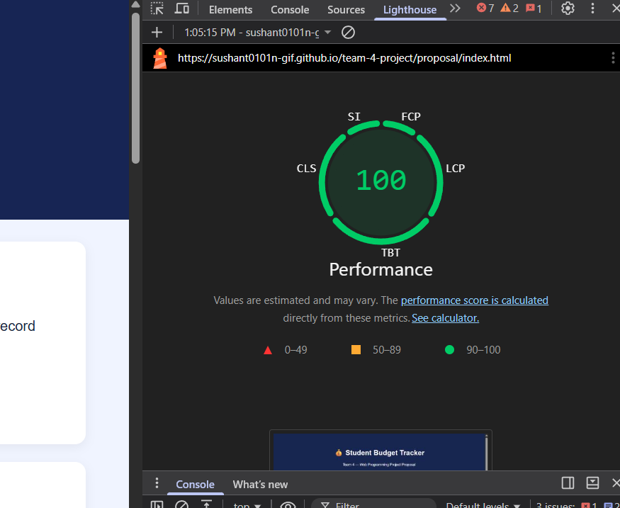
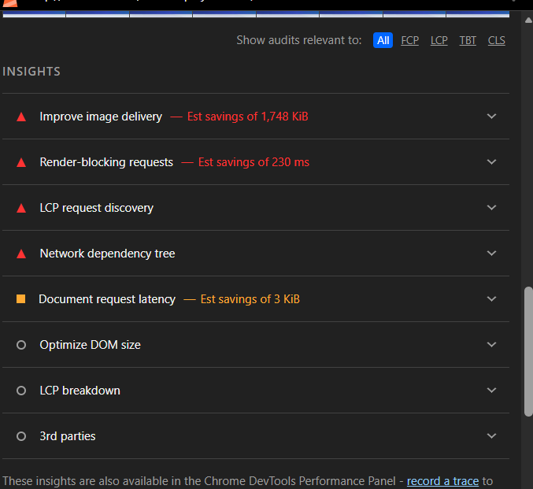
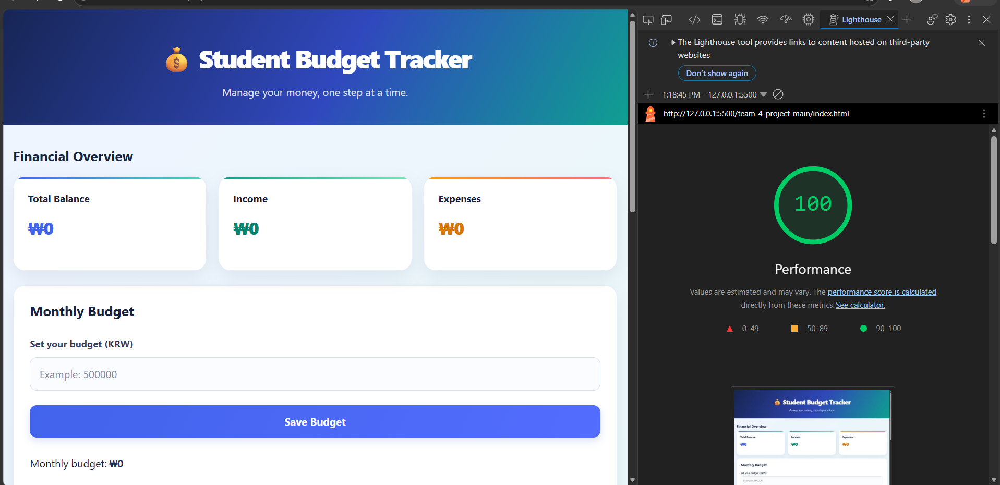

Student Budget Tracker
Lighthouse Performance Audit and Optimization Report
1. Introduction
The purpose of this task was to evaluate the performance of my Student Budget Tracker website using Google Lighthouse and improve its performance through code optimization.
I first checked the original website, reviewed Lighthouse recommendations, applied several improvements, and then performed another performance test.
2. Before Optimization
I ran Lighthouse on the original deployed website to check its initial performance.
Initial Performance Score
Screenshot 1: Original Lighthouse Performance Score

3. Issues and Improvement Opportunities
During testing, I also performed a temporary local check to examine Lighthouse recommendations and identify possible performance improvements.
Screenshot 2: Temporary Lighthouse Performance Check

Screenshot 3: Lighthouse Errors and Opportunities

Issues Identified
- Large image files could increase page loading time.
- Some resources could delay the initial page rendering.
- Repeated array filtering and calculations could be reduced.
- Repeated DOM updates could be made more efficient.
- Unnecessary visual effects could add rendering work.
4. Optimizations Applied
Based on the Lighthouse recommendations, I focused on improving the HTML, JavaScript, and CSS of the website.
I used the defer attribute for the JavaScript file so that the browser can continue parsing the HTML before executing the script.
I optimized repeated array filtering and calculations by processing transaction data in a single loop where possible.
I used DocumentFragment to group transaction elements before adding them to the page, reducing repeated DOM updates.
I removed unused external libraries and unnecessary large images to reduce extra resource loading.
I reduced unnecessary blur effects and continuous animations to make the interface simpler and lighter.
5. After Optimization
After applying the improvements, I ran Lighthouse again to check the performance of the website.
Final Performance Score
Screenshot 4: Final Lighthouse Performance Score

6. Reflection
Through this task, I learned how to use Google Lighthouse to analyze website performance and identify possible improvements. I also learned that optimizing JavaScript, reducing unnecessary resources, and improving DOM updates can help make a website more efficient.
Although the official Performance score remained at 100, this activity helped me understand how to evaluate and improve website code.
7. Submission Checklist
- ✓ Original Lighthouse screenshot included
- ✓ Temporary performance check screenshot included
- ✓ Lighthouse issues screenshot included
- ✓ Final Lighthouse screenshot included
- ✓ At least three optimization methods explained
- ✓ Two-sentence description of changes included